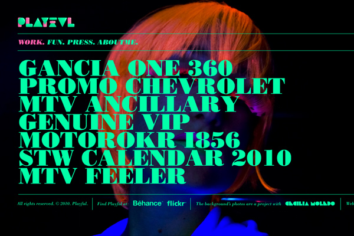
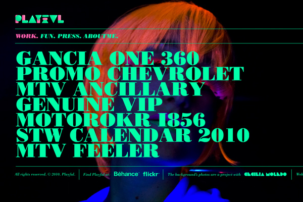

Playful 2010
Argentinean graphic designer and illustrator Pablo Alfieri relaunches his website, Playful 2010 with bold colors and great typography. The “Fun" section is full of inspiring artistic and creative experiments.

Argentinean graphic designer and illustrator Pablo Alfieri relaunches his website, Playful 2010 with bold colors and great typography. The “Fun" section is full of inspiring artistic and creative experiments.